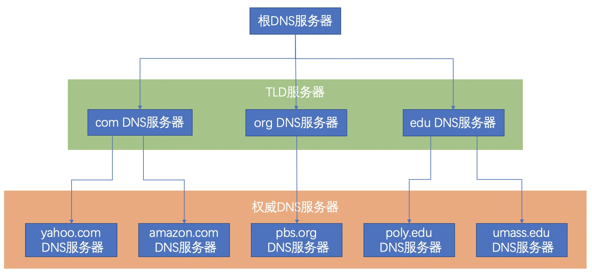
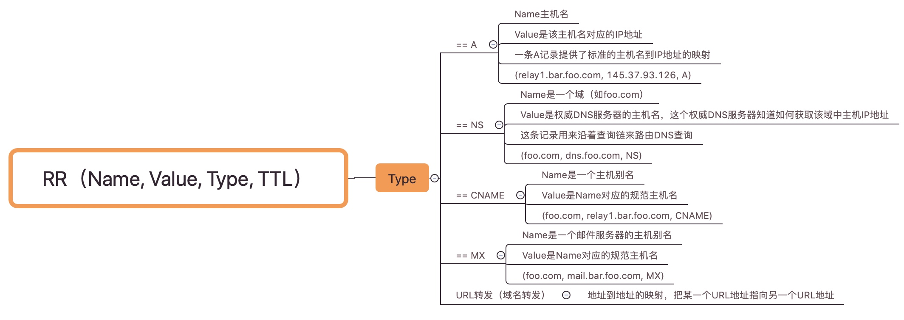
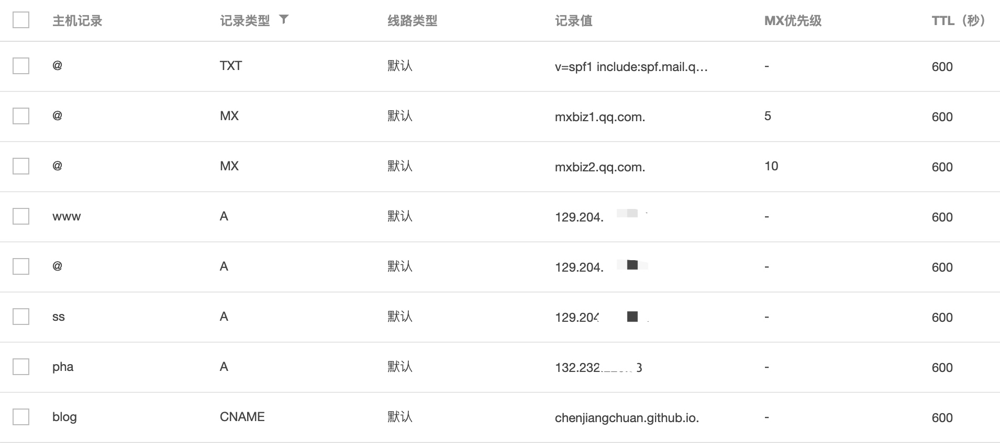
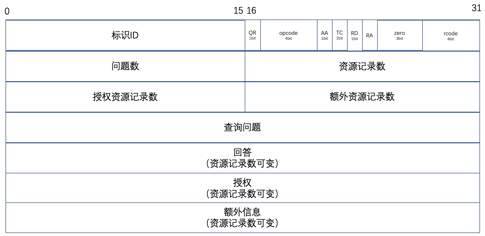

DNS（Domain Name System）概念
一个人可以通过姓名、身份证号、公司的工号等等来标识，尽管这些标识都可以用来识别一个人，但是特定环境下，某种识别方法可能比另一种方法更为合适。比如姓名为张三的身份证号为362101196002191090的朋友，我们通常打招呼会说：张三，吃饭了呗？而不是说：362101196002191090，吃饭了呗？
因特网上的主机和人一样，可以有很多方式进行标识，比如主机名（域名）www.onez-gz.com，这名字便于我们记忆，但是主机名几乎没有提供关于主机在因特网中位置的信息（除了cn、jp等以国家码结束的域名），而且因为主机名的不定长，导致路由器难于处理，所以主机也可使用定长、有层次结构的IP地址进行标识。
所以需要一种服务：主机名到IP地址的转换。这个就是DNS的主要任务，它是：
- 一个由分层的DNS服务器实现的分布式数据库；
- 一个应用层协议（基于UDP）：可用来查询分布式数据库。
下面简单的描述一个http请求的过程，假设在浏览器中请求：http://www.onez-gz.com/#/index
- 浏览器从URL中抽取主机名：www.onez-gz.com，并将主机名传给DNS客户端（每台主机都自带DNS客户端）；
- DNS客户端发送一个包含主机名的请求报文给DNS服务器；
- DNS客户端接收到一个包含主机名对应IP的回答报文；
- 浏览器向该IP地址的80端口的http服务器进程发送发起一个TCP连接请求。
DNS服务器类别
DNS采用分布式设计，分层次结构如下：

- 根DNS服务器：全球有13个根服务器，它是最高级别的DNS服务器，负责返回顶级域的权威DNS服务器地址；
- 顶级域DNS（TLD）服务器：负责顶级域名如com、org、net、edu和gov，及所有国家的顶级域名如cn、uk、jp等；
- 权威DNS服务器：特定域名记录在域名注册商所设置的DNS服务器，用于特定域名本身的管理（增删改查），它只对自己所拥有的域名进行域名解析，对于不是自己的域名则拒绝访问。比如向
example.com的权威DNS服务器查询test.com的域名肯定会查询失败。所以我们一般说 某某域名的权威DNS服务器 。
还有一个处于层次结构之外的本地DNS服务器，它是由ISP（因特网服务提供商）提供的本地DNS服务器，当主机与某个ISP连接时，该ISP提供一台主机的IP地址，该主机具有一台或多台其本地DNS服务器的IP地址。
比如你报装了电信的宽带（电信可以理解为一个ISP），安装完后，你通过账号密码连接上网络，这时电信（ISP）会分配一个IP地址给你，如果我们电脑通过DHCP获取DNS，那么通常获取到的DNS服务器就是本地DNS服务器。
DNS缓存
本来不打算说这个，但是后面的DNS报文中有DNS缓存时长的字段，所以这里简单的描述下。但在说DNS缓存之前，我们得先知道DNS查询的过程（直接拿《计算机网络 自顶向下方法》例子）。
前提：
- 主机名为
cis.poly.edu的主机想知道主机名为gais.cs.umass.edu的IP地址； cis.poly.edu的本地DNS服务器为dns.poly.edu；gais.cs.umass.edu的权威DNS服务器为dns.umass.edu。
过程：
假设一台主机要查询gais.cs.umass.edu的IP地址，那么总共有8个DNS报文包；如果有十台主机要查询gais.cs.umass.edu的IP地址，那么需要80个DNS报文包，以此类推，查询的主机越多，报文包成倍增长。为了减少DNS报文数量和请求报文的时延，采用了缓存技术。当某个DNS服务器接收到一个回答报文时，它将回答报文的信息缓存到本地。
所以当cis.poly.edu第二次查询gais.cs.umass.eduIP地址时，dns.poly.edu本地DNS服务器从缓存中读取对应的IP地址并返回。
DNS资源记录
我们知道DNS服务器保存了域名和IP地址的相关信息，但这些信息是以什么形式存储的？
资源记录（Resource Record，RR）：RR提供了主机名到IP地址的映射，RR是一个包含4个字段的元组：(Name，Value，Type，TTL)，TTL是记录这条RR从缓存删掉的时间。

下图是我在腾讯云中对onez-gz.com解析记录

- TXT记录类型是用来做 SPF 记录（反垃圾邮件）
- MX记录类型是对QQ企业邮箱服务器进行路由：xxx@onez-gz.com
- 3条A记录类型都映射到同一个IP地址：onez-gz.com、www.onez-gz.com、ss.onez-gz.com都映射到129.204.xx.xx；
- CNAME记录类型是给规范主机名
chenjiangchuan.github.io取了一个别名blog.onez-gz.com。
DNS报文
DNS只有两种报文：查询报文和回答报文，它们的的格式是相同的。

这里不详细说明每个字段的意义，提几个关键的字段：
- 标识ID：由查询报文设置这个字段，当对查询报文进行回答时，这个标识会被复制到回答报文的标识ID字段中，DNS客户端用来区分不同的回答报文；
- QR：区分是请求（0）还是回答（1）报文；
- opcode：设置查询报文的种类，回答报文会带相同的值：标准查询（0）、反向查询（1）、服务器状态查询（2）、保留值（3-15）；
- rcode：响应码，在回答报文中设置，没有错误（0）、报文格式错误（1）、服务器失败（2）、名字错误（3）、没有实现（4）、拒绝（5）、保留值（6-15）。
如何在DNS数据库中插入记录
下面以在DNSPod（已被腾讯收购）购买onez-gz.com域名为例。
一般域名注册商会提供两个基础的服务：1、域名注册服务本身；2、DNS服务。
- 在购买域名后DNSPod会帮你在ICANN（因特网名字和地址分配机构）申报；
- 使用DNSPod提供的DNS服务器（权威DNS服务器）：f1g1ns1.dnspod.net（14.215.155.170）、f1g1ns2.dnspod.net（14.215.155.203），通常会自动设置；
会在TLD com服务器中插入一个类型为NS和一个类型A的记录：
(onez-gz.com, f1g1ns1.dnspod.net, NS) (f1g1ns1.dnspod.net, 14.215.155.170, A)
DNS劫持
DNS劫持大体分为6类：
- 利用DNS服务器进行DDoS（分布式拒绝服务）攻击；
- DNS缓存污染；
- DNS信息劫持；
- DNS重定向；
- ARP欺骗；
- 本机劫持。
主要说下DNS信息劫持。
DNS信息劫持
我们知道每个DNS查询报文中有16bit的标识ID，DNS服务器根据这个标识ID获取发起查询报文的源位置，入侵者通过监听DNS客户端与DNS服务器的会话，在DNS服务器发送回答报文之前将虚假的回答报文交给DNS客户端，从而欺骗客户端去访问恶意的网站。